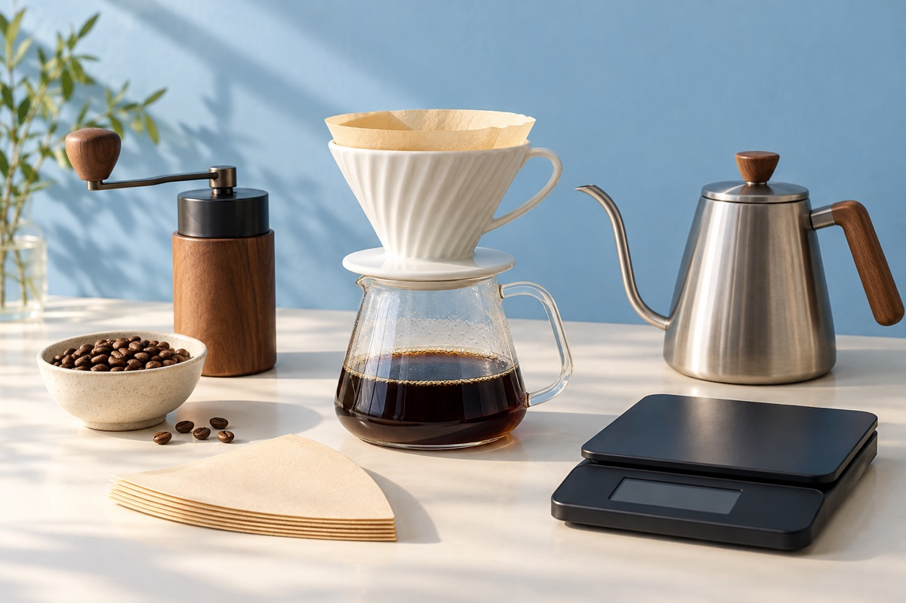
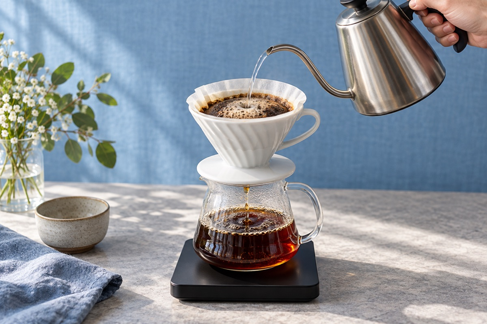
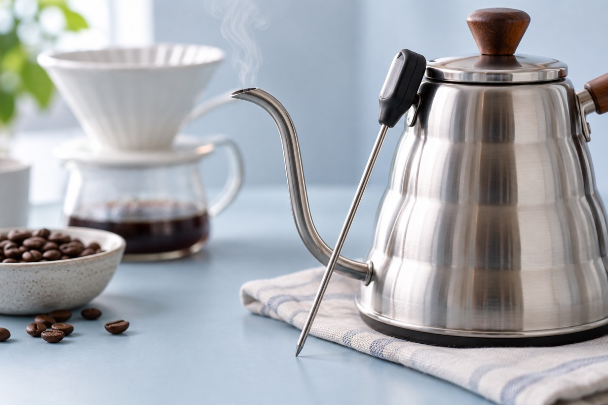
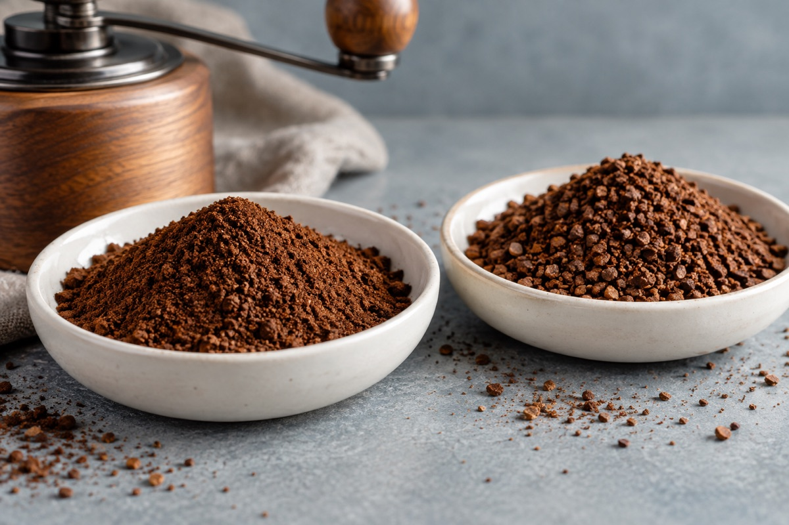
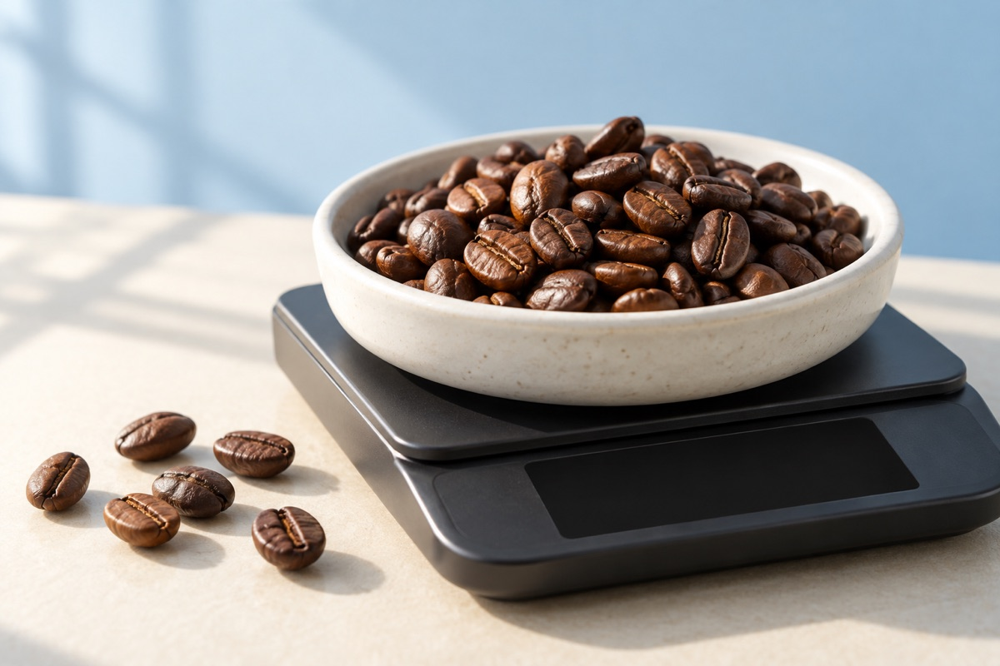
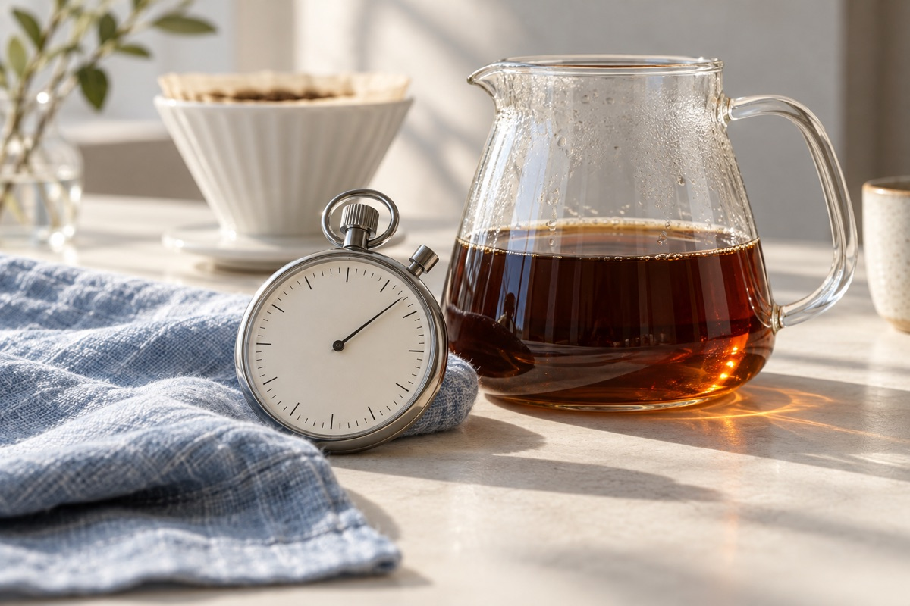
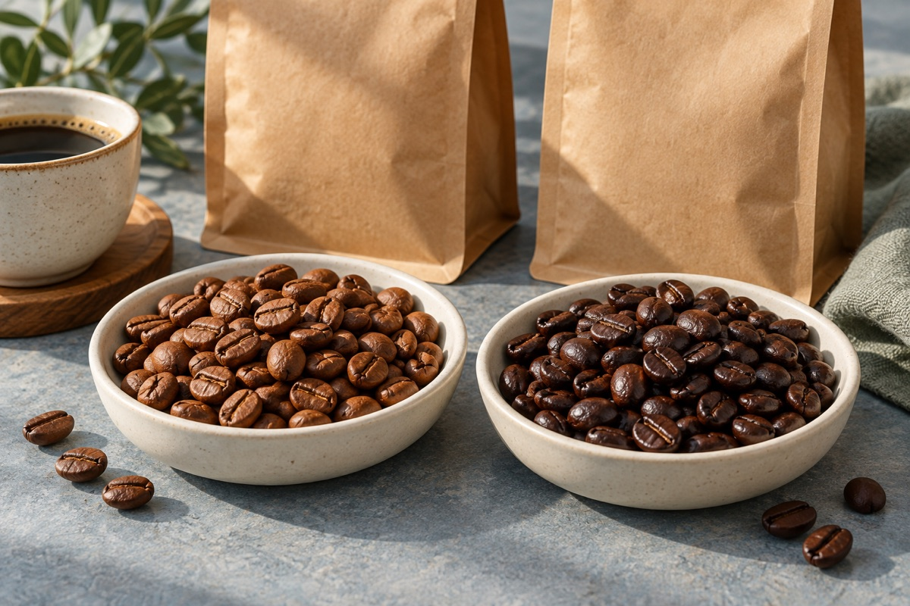
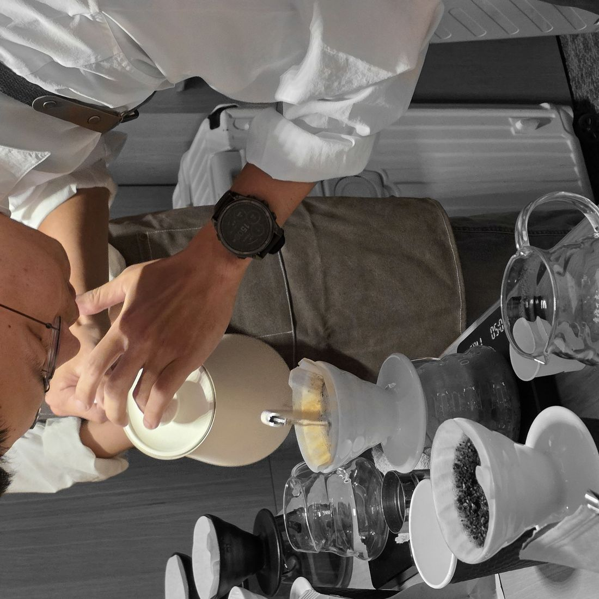
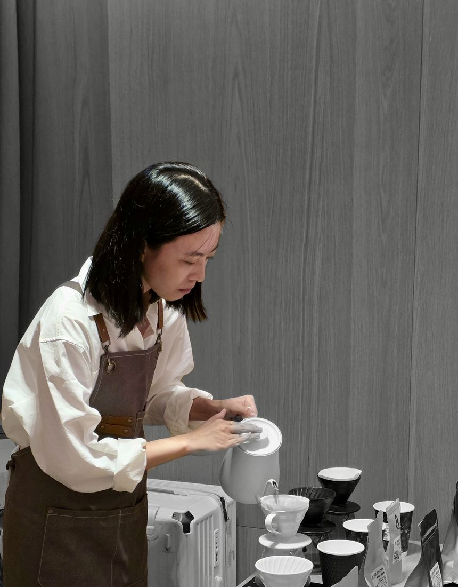
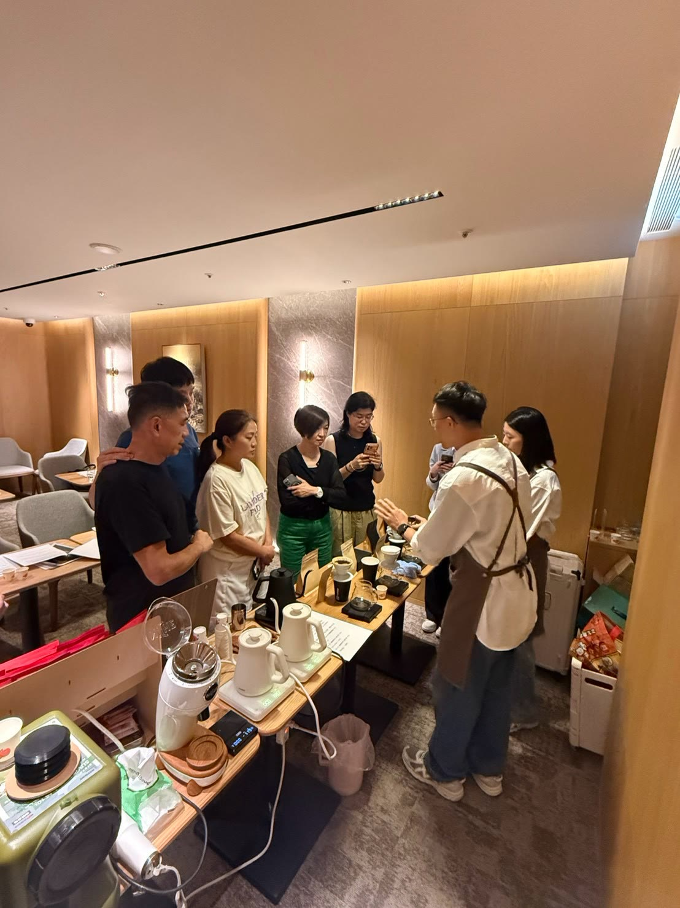

PREPARE. POUR. TASTE.01YOUR FIRST BREW
一套 SOP，
讓第一杯有跡可循。
從準備到品飲，把手沖拆成清楚的步驟。不需要憑感覺猜，跟著流程，一步一步練習。
- 01準備與秤量認識器材，記錄豆量與水量。
- 02研磨與潤濕濾紙依器材準備好咖啡粉與濾杯。
- 03悶蒸與分段注水跟著老師，練習觀察水流與粉床。
- 04品飲與紀錄記下味道，整理下次可以調整的方向。
帶走：一套回家也能照著練的流程
好好手沖Good Good Pour
四小時，從手沖 SOP 到世界冠軍 4:6 沖法，學會調整風味，也學會挑豆。
林口／樹林／土城可安排 · 一人也可開班
01 WHAT YOU WILL LEARN
先動手，再理解。把每一次沖煮的疑問，變成下一杯的方向。

PREPARE. POUR. TASTE.從準備到品飲，把手沖拆成清楚的步驟。不需要憑感覺猜，跟著流程，一步一步練習。

A METHOD WORTH EXPLORING.練習粕谷哲的 4:6 沖法，用分段注水理解調整方向。先掌握方法，再依豆子與器材找出自己的風味。
方法來源：2016 世界沖煮冠軍粕谷哲。閱讀 HARIO 官方介紹 ↗
一次觀察一個改變。用相同的豆子練習，讓味道成為你的回饋。

01 / TEMPERATURE
熱一點，味道會不一樣嗎？
水溫會影響萃取速度。提高水溫通常有助於萃取，但風味仍會隨豆子、烘焙與其他參數改變。
用同一支豆子比較，練習找到合適的溫度。

02 / GRIND SIZE
磨細一點，就一定更好喝？
粗細影響粉粒的接觸面積與水流。研磨較細可能增加萃取，也可能讓流速變慢；刻度需依磨豆機與豆子調整。
觀察流速與品飲結果，不只記住磨豆機的數字。

03 / COFFEE DOSE
想喝濃一點，從哪裡開始？
豆量與用水量一起決定粉水比。在用水量固定時，增加豆量會改變濃度，也會改變粉床與沖煮表現。
先把豆量與水量秤準，再練習調整濃淡。

04 / BREW TIME
沖得越久，味道越完整？
時間是觀察萃取的線索，也受研磨與注水方式影響。不能只用秒數判斷好壞，要一起看流速與杯中風味。
記下總時間，配合味道回顧每一次沖煮。
精品豆與商業豆各有不同訴求。從資訊、風味與用途出發，選適合自己的咖啡。

| 選豆觀察 | 精品豆SPECIALTY COFFEE | 商業豆COMMERCIAL COFFEE |
|---|---|---|
| 產地資訊 | 常強調產區、莊園、品種與處理法等細節。 | 常以品牌、配方或穩定供應為主要資訊；揭露程度依產品而異。 |
| 風味訴求 | 常呈現產地與處理帶來的特色，例如花香、果香或甜感。 | 常追求一致、熟悉的風味，方便日常飲用或搭配奶飲。 |
| 品質評估 | 重視可辨識的特色與其價值，搭配感官及品質評估。 | 常重視一致性、成本與用途；也可以有良好品質。 |
| 選購方向 | 看產地資訊與風味描述，再選符合喜好的豆子。 | 看配方、烘焙、鮮度與用途，選適合日常需求的產品。 |
以上為常見訴求，不是絕對分類；深淺焙也不等同精品與商業。參考 SCA 精品咖啡定義 ↗
02 YOUR FOUR HOURS
四小時，循著一杯咖啡的誕生，慢慢把方法練熟。
從品飲開始，認識豆子與自己的喜好。
跟著步驟動手沖，建立可以重複的流程。
比較水溫、刻度、豆量與時間的影響。
體驗分段注水，練習有方向地調整風味。
把重點寫進講義，整理回家練習的方向。
兩位講師親自授課，一人也可以開班。
03 TAKE THE METHOD HOME
課堂裡的理解，留在回家後的每一杯。
讓準備、注水與品飲的重點，有一張清楚的提醒。
記下參數、杯中風味與老師的提醒，留下自己的學習軌跡。
課程包含學習卡與講義，不包含贈送器材。
每一杯，都有下一步。
YOUR BREW, STEP BY STEP
04 LEARN WITH US
我們是阿勳與露露。從第一個問題到第一杯咖啡，一起把方法練清楚。

YOUR COFFEE GUIDE / 01
陪你釐清沖煮步驟，從操作與風味中找到調整方向。

YOUR COFFEE GUIDE / 02
把新手的疑問一步步拆解，讓練習變成能帶回日常的方法。


一人也可開班
阿勳與露露親自授課
林口／樹林／土城可安排
05 A FEW GOOD QUESTIONS
可以。這堂四小時體驗課為新手設計，兩位講師會從基礎帶你練習，不需要先懂專業術語。
林口、樹林、土城都可以安排課程。請透過 LINE 告訴我們方便的地區與時間，再確認日期及詳細地址。
可以，一人也可開班，由阿勳與露露兩位講師親自授課。實際安排與人數請透過 LINE 確認。
器材與課前準備安排，請在報名前透過 LINE 確認。課程不包含贈送器材。
包含每人四小時體驗課、兩位講師親自授課、SOP 學習卡，以及一本可以充分做筆記的講義。
你會帶走可照著練習的流程與調整方向。不同豆子、烘焙與器材仍需要微調；課堂會練習用風味判斷下一步。
YOUR NEXT CUP STARTS HERE
不用先懂咖啡，帶著好奇心就好。
林口／樹林／土城可安排 · 一人也可開班
SOP 學習卡 ＋ 筆記講義 · 兩位講師親自授課
透過 LINE 確認開課時間、詳細地址與準備事項。